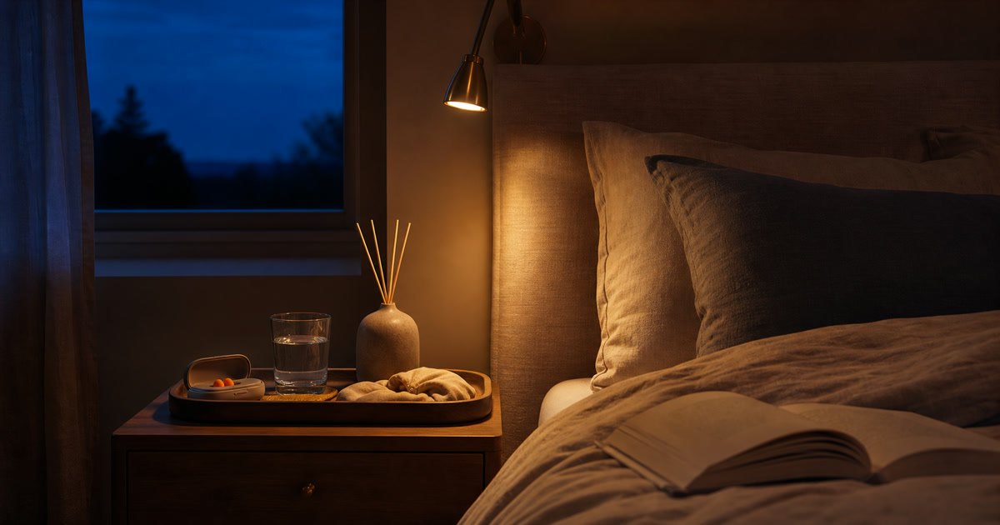

床邊櫃與睡前小物：耳塞、閱讀燈、香氛與床寢怎麼放
床邊櫃只放睡前最後十五分鐘會用到的物件，耳塞、閱讀燈、香氛與床寢才不會變成雜物展示。

床邊櫃是一天最後一個工作台，也最容易堆滿沒有結束的事情。充電線、書、香氛、耳塞、護手霜、水杯與隔天要帶的東西全部放上去，看似方便，實際上會讓睡前視線變吵。更好的方式，是只留下最後十五分鐘真正會碰到的物件：看、放、關、起身。其餘都應該回到抽屜、書桌或玄關。
先分閱讀、安靜、飲水與起身
閱讀燈和書屬於看，耳塞屬於安靜，水杯屬於睡前補充，隔天眼鏡或髮圈屬於起身。四類混在一起，就會越放越滿。
每一類只留一到兩件高頻用品，床邊櫃才會真正安靜。
Elite Fashion 編輯團隊的具體判斷是：床邊櫃只留下睡前最後十五分鐘會用到的物件，耳塞、閱讀燈、香氛與床寢才有真正位置。 這讓 耳根清靜 - 耳塞/優質睡眠專賣店、燈后- LED居家/智能/照明/五金/居家生活用品 與其他選項能被放回同一個生活問題裡比較，而不是只看單一商品照片。
下單前仍要回商品頁確認規格、尺寸、材質、活動、庫存與配送；若資訊不足，先暫緩，比把不確定的物品帶回家更成熟。
- 先確認使用位置與拿取頻率。
- 再看保存、清潔、線材或收納條件。
- 最後才比較品牌、活動與預算。
燈光要照到書，不要照亮整個房間
閱讀燈的位置比造型更重要。光線應落在書頁或床側，不需要讓整個臥室重新變亮。
亮度、色溫、燈具尺寸與用電條件請回商品頁確認。
Elite Fashion 編輯團隊的具體判斷是：床邊櫃只留下睡前最後十五分鐘會用到的物件，耳塞、閱讀燈、香氛與床寢才有真正位置。 這讓 耳根清靜 - 耳塞/優質睡眠專賣店、燈后- LED居家/智能/照明/五金/居家生活用品 與其他選項能被放回同一個生活問題裡比較，而不是只看單一商品照片。
下單前仍要回商品頁確認規格、尺寸、材質、活動、庫存與配送；若資訊不足，先暫緩，比把不確定的物品帶回家更成熟。
- 先確認使用位置與拿取頻率。
- 再看保存、清潔、線材或收納條件。
- 最後才比較品牌、活動與預算。
Elite 嚴選
香氛是最後一層，不是睡眠保證
香氛可以讓床邊更有儀式感，但不應被寫成助眠或療效。若床邊已經堆滿紙張和衣物，先整理比新增香味更重要。
香味、材質、使用方式與過敏疑慮都應以商品頁及包裝為準。
Elite Fashion 編輯團隊的具體判斷是：床邊櫃只留下睡前最後十五分鐘會用到的物件，耳塞、閱讀燈、香氛與床寢才有真正位置。 這讓 耳根清靜 - 耳塞/優質睡眠專賣店、燈后- LED居家/智能/照明/五金/居家生活用品 與其他選項能被放回同一個生活問題裡比較，而不是只看單一商品照片。
下單前仍要回商品頁確認規格、尺寸、材質、活動、庫存與配送；若資訊不足，先暫緩，比把不確定的物品帶回家更成熟。
- 先確認使用位置與拿取頻率。
- 再看保存、清潔、線材或收納條件。
- 最後才比較品牌、活動與預算。
常見錯誤：把床邊櫃當小倉庫
床邊櫃越大，越容易放進不該在睡前出現的東西。真正成熟的床邊配置，是讓拿取變少，而不是讓收納變多。
若一件物品連續一週都沒有在睡前使用，就移出床邊。
Elite Fashion 編輯團隊的具體判斷是：床邊櫃只留下睡前最後十五分鐘會用到的物件，耳塞、閱讀燈、香氛與床寢才有真正位置。 這讓 耳根清靜 - 耳塞/優質睡眠專賣店、燈后- LED居家/智能/照明/五金/居家生活用品 與其他選項能被放回同一個生活問題裡比較，而不是只看單一商品照片。
下單前仍要回商品頁確認規格、尺寸、材質、活動、庫存與配送；若資訊不足，先暫緩，比把不確定的物品帶回家更成熟。
- 先確認使用位置與拿取頻率。
- 再看保存、清潔、線材或收納條件。
- 最後才比較品牌、活動與預算。
下單前的床邊測試
關掉主燈，躺到平常的位置，伸手測試燈、書、水杯、耳塞和眼鏡是否都能安全拿到。這比看商品照更接近真實。
Elite Fashion 編輯團隊的判斷是：床邊櫃的質感不是擺得滿，而是每一次關燈前都不用再整理一次。
Elite Fashion 編輯團隊的具體判斷是：床邊櫃只留下睡前最後十五分鐘會用到的物件，耳塞、閱讀燈、香氛與床寢才有真正位置。 這讓 耳根清靜 - 耳塞/優質睡眠專賣店、燈后- LED居家/智能/照明/五金/居家生活用品 與其他選項能被放回同一個生活問題裡比較，而不是只看單一商品照片。
下單前仍要回商品頁確認規格、尺寸、材質、活動、庫存與配送；若資訊不足，先暫緩，比把不確定的物品帶回家更成熟。
- 先確認使用位置與拿取頻率。
- 再看保存、清潔、線材或收納條件。
- 最後才比較品牌、活動與預算。
同主題品牌參考
耳根清靜 - 耳塞/優質睡眠專賣店
睡眠耳塞推薦、打呼降噪、旅行睡眠配件、考生專注隔音
瀏覽品牌燈后- LED居家/智能/照明/五金/居家生活用品
小宅照明改造、LED燈怎麼選、智能照明入門、租屋燈光升級
瀏覽品牌BETENSH 床墊 | 官方旗艦店
床墊怎麼選、租屋床墊升級、睡眠品質改善清單
瀏覽品牌THANN官方直營
質感生活族、送禮族、香氛保養愛好者
瀏覽品牌禾肯居家｜北歐風床包被套枕套 中式床罩 保潔墊 IKEA床包
IKEA床包尺寸、北歐風寢具、保潔墊與換季床寢清單
瀏覽品牌紳娜多家居官方店｜獨立筒枕 乳膠床 飯店枕 床包 被套 枕套
枕頭怎麼選、飯店感寢具、租屋床寢升級
瀏覽品牌FAQ
床邊櫃應該放香氛嗎？
可以，但香氛應放在整理與通風之後，且不應期待療效或助眠保證。
耳塞需要固定放床邊嗎？
如果經常因環境聲音受干擾，可以放在固定小盒中；材質與配戴感仍要自行確認。
閱讀燈怎麼選？
先看照射範圍、床邊高度、插座位置與是否容易關閉。
下一步建議
床邊小物要先分閱讀、安靜、保濕飲水與隔天起身四件事，再比較耳塞、燈具、香氛與床寢。 先用本文順序縮小範圍，再回商品頁確認規格、價格、活動與庫存。
重要警語
本文含品牌／商品導購連結；商品資訊、價格、規格、活動與庫存請以商品頁公告為準。耳塞、燈具、香氛與床寢不作助眠、療效或健康承諾；材質、香味、亮度、尺寸與使用限制請以商品頁及包裝為準。
本文含品牌／商品導購連結；若你透過部分商品連結前往選購，Elite Fashion 可能取得合作收益。本文仍以編輯判斷與使用情境整理為主，價格、規格、活動與庫存請以商品頁公告為準。